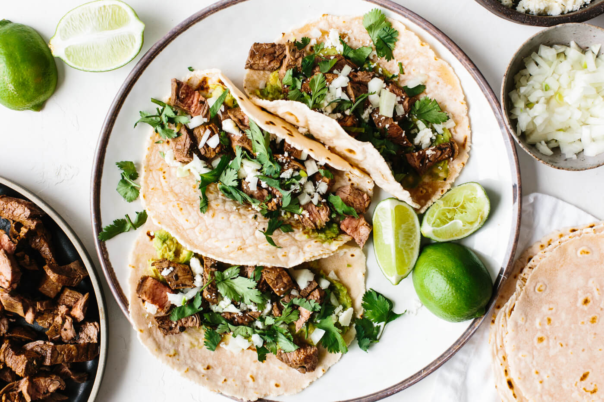

A few years ago, I'd never even heard of pho, let alone tasted it. Now, giant bowls of this traditional Vietnamese noodle soup are a regular meal in our house. Carrot Ginger Soup There are three things I can thank for this change: 1) Moving to a part of the country where pho restaurants are as common as pizza joints. 2) Several months of gluten-free eating last year due to a health issue. 3) Meeting and becoming friends with Vietnamese cooking expert Andrea Nguyen. Andrea has now published a new book entirely devoted to -- what else?! -- pho, and I'd like to share with you her recipe for Quick Chicken Pho. This recipe is a great introduction to pho if you've never had it before. And for pho addicts like myself, it's a good one to have around when a pho-craving strikes.

I think we’ve firmly established (through the numerous recipes on this website) that I’m a lover of Mexican food. For me, Mexican food is all about fresh ingredients, bold flavor and simple spices. It’s unfussy, approachable and let’s be honest, it’s always the perfect cuisine for a party or good time.